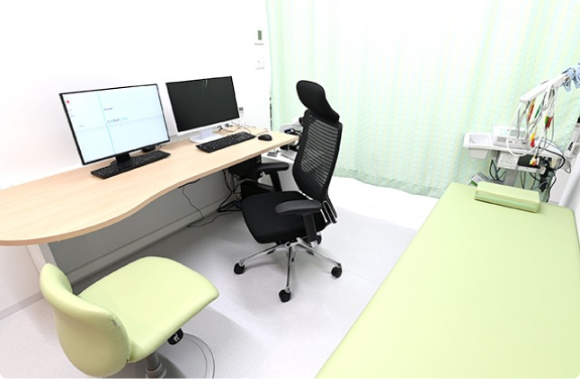
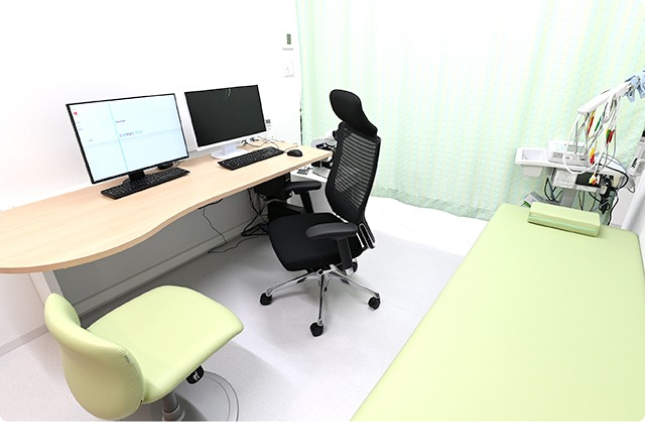

クリニック・医師紹介
おうえケアとわクリニックは、内視鏡検査(胃カメラ・大腸カメラ)を中心とし、さまざまな治療を扱う総合クリニックです。
内視鏡検査による、がん（胃がん・食道がん・十二指腸がん・大腸がん）の発見や、ポリープの発見・切除、ピロリ菌の検査・治療などを行い、患者様の将来の健康に貢献していきます。
苦 し く な い
内視鏡検査
胃カメラ・大腸カメラ

 



消化器内科 / 内科 / 皮膚科 / 外科
東京都新宿区河田町3-10 河田町安田ビル3階
| 診療時間 | 月 | 火 | 水 | 木 | 金 | 土 | 日/祝 |
|---|---|---|---|---|---|---|---|
| 9:00 - 13:00 | / | ||||||
| 15:00 - 19:00 | / | / | / | / |
土曜の診療は 9:00~14:00 まで
火曜は代診となります
都営新宿線「曙橋駅」、
大江戸線「若松河田駅」より徒歩6分
受付
感染予防対策に配慮した自動釣銭機
清潔感のある待合室
リカバリーチェア
診察室
バリアフリートイレ
エックス線室
医療脱毛機Asclepion社「メディオスター」
ビデオスコープ
移動式免疫蛍光分析装置
AQT90 FLEXシステム
エキシマライト療法
ウシオ電機社「セラビームUV308®mini」
おうえケアとわクリニック
院長麻植 一孝
おうえケアとわクリニック院長の麻植一孝（おうえ かずたか）です。
東京慈恵医科大学附属病院で、虫刺されや捻挫、風邪等の一般的な疾患から、重症外傷や重症感染症等の集中治療管理までの幅広い救急含めた疾患を研修医時含め約10年行ってきました。
当院の全スタッフが真心を込めた医療サービスを提供し、地域の皆様に笑顔になっていただけるよう日々努力しております。

おうえケアとわクリニック
院長麻植 一孝
経歴
- 昭和61年8月10日生まれ 広島県出身
- 福岡教育大学附属久留米小中学校 卒業
- 熊本マリスト学園高校 卒業
- 福岡大学医学部 卒業
- 東京慈恵会医科大学附属病院 研修医
- 東京慈恵会医科大学附属病院 救急部所属
所属学会・保有資格
- 日本消化器内視鏡学会
- 日本整形外科学会
- 日本救急医学会 救急科専門医
- 日本救急医学会
- 臨床救急医学会
- 日本中毒学会
救急医を選んだ背景
救急医を選んだ背景
正直、学生の頃は、形成外科や脳神経外科。研修医の頃は、外科や整形外科等、色々な科を悩みました。
結局一つの科に絞ることができず、それならば、色々な科を総合的に診ることができる救急にしようと思ったのが一つ。
それに準じて、患者様が病気になり、病院にいらした時の一番初めの窓口になれる科だったので「救急医になろう」と思いました。
あまり聞き慣れないフレーズですが、救急医は、一般的な内科、外科的なことはもちろん、皮膚科や整形外科的疾患、新生児やご高齢の方まで、幅広い疾患と幅広い重症度、幅広い年齢層を対象とするため、むしろ適任なのではないかと考え、おうえケアとわクリニックを開院いたしました。
理想の医師像
理想の医師像
理想とする医師像は、「ユーモアこそが最良の薬」という説を実践した、米国の医師 「パッチ・アダムス」です。
医学生低学年の授業で『パッチ・アダムス トゥルー・ストーリー』を観た際、「もし自分が患者だった場合、こんな楽しい先生だったら嬉しいし、どんなに心強いだろう」と衝撃を受けたのを今でも覚えています。
実際にお会いしたことはありませんが、私なりに「パッチ・アダムス」に似た思想で診療していきたいと常に思っています。
『パッチ・アダムス トゥルー・ストーリー』を観たことがない方は、ぜひご覧になってください。
患者さまの心に寄り添い
笑顔と『ケア』を『とわ』に
患者様一人ひとりに寄り添った医療を提供していきます。
在宅医療・クリニック・中小病院・大学病院といった医療提供の場所の輪をつくります。
〒 162-0054
東京都新宿区河田町３−１０ 河田町安田ビル3階
03-6709-9725
| 診療時間 | 月 | 火 | 水 | 木 | 金 | 土 | 日/祝 |
|---|---|---|---|---|---|---|---|
| 9:00 - 13:00 | / | ||||||
| 15:00 - 19:00 | / | / | / | / |
休診：日曜/祝日
土曜の診療は 9:00~14:00 まで
火曜は代診となります
アクセス
都営新宿線「曙橋駅」
大江戸線「若松河田駅」
徒歩
6分